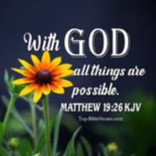
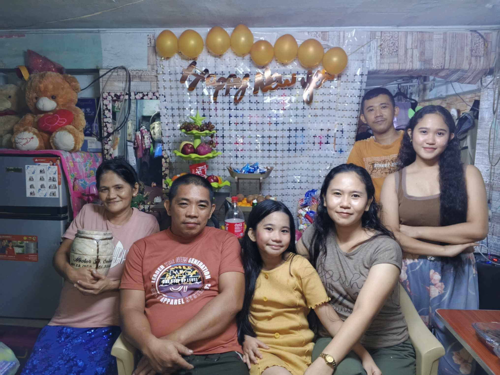

My name is Mary Anne P. Solon, and I'm 21 years old. I live in Tondo, Manila, a place that has shaped much of who I am today.
I come from a small family of five, including myself. I have two amazing sisters and one brother.
My eldest sister, Mary Jane P. Solon, is 31 years old and happily raising three wonderful kids with her own family.
My second sister, Shannon S. Tejano, is married to her loving husband, Rudo C. Tejano, and they have a beautiful 9 years old daughter, Roshan S. Tejano.
Nestor P. Solon Jr, who has been always been supportive. Sadly, my father Nestor B. Solon, passed away in 2022.
It was a challenging time for us, but my family showed an incredible strength.
My siblings stepped in to support me financially and emotionally so I could continue pursuing my dreams.
My mother, Maria P. Solon, a strong and caring woman, remains a constant source of love and guiding in our lives.
Currently, I am a first-year college student at TUP Manila taking Bachelor of Technological Vocational Teacher Education Major in Electronics Technology.
During my free time, I enjoy reading books especially wattpad books, watching K-dramas, and spending my quality time together with my family to church.
Additionally, I like exploring long rides, going to green places that help me unwind.
I also enjoy running since it comes naturally to me as a former athlete. Dancing is another passion of mine, let's take it a secret, because I'm shy.

"With God all things are possible" Matthew 19:26 is my favorite quote because it gives me so much hope and strength in life.
For me, this quote or verse means no matter how hard or impossible something, I can always trust God to help me through it.
When I think of the challenges I have faced like losing my father in 2022, it reminds me that even during the toughest moments, God's power
and love are greater than any obstacles. As a college student, I face struggles and uncertainties about my future,
but this quote reassures me that as long as I do my best and trust in God, anything is possible.

All my life, I dreamed of becoming a nurse. I wanted to help people and make a difference in their lives by caring for them.
But as I grew older, my faith and experiences changed my heart, and now I want to become an LPT and a successful person.
I realized that being a teacher is more than just teaching lessons; it’s about inspiring and helping students grow.
I want to guide young minds, not just in their studies, but also in believing in themselves and achieving their goals.
Teaching feels like my calling. It’s a way for me to give back and make a positive impact on others.
My faith has helped me see that this is the right path for me.
I know it will take hard work to reach my goal, but I am determined to do my best. Becoming an LPT is my dream now, and
I am excited to work towards it step by step especially since I have a family who's always proud of me.
